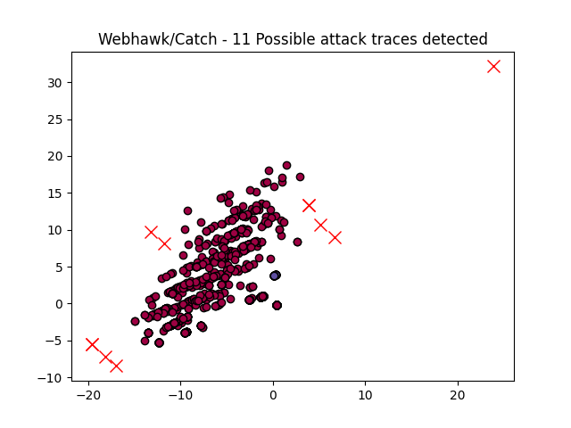

Webhawk Catch ReportUnsupervised learning Web logs/OS processes attack detection. Date: 03/06/25 at 19:12:00 GMTLog file: /Users/walid/Downloads/access.log.2024-10-02 Log type: apache logs Findings: 11 |
 |
| Severity | Related CVE(s) | Line# | LLM Insights | Log line |
| High | No CVE found | 147 | This log line appears to be benign, as it shows a legitimate GET request from an IP address (52.169.158.10) for the admin panel of a web application (/admin.php), with a successful 301 redirect response. There is no indication of malicious activity or suspicious behavior. | 52.169.158.10 - - [02/Oct/2024:01:16:28 -0700] "GET /ALFA_DATA/admin.php HTTP/1.1" 301 457 "-" "-" |
| High | No CVE found | 148 | This log line appears to be a legitimate request for the admin panel of an application, but with a high number of redirects (429) and a large amount of data transferred (430 bytes). This could indicate a brute-force attack or an administrator attempting to access sensitive information. | 52.169.158.10 - - [02/Oct/2024:01:16:28 -0700] "GET /ALFA_DATA/admin.php HTTP/1.1" 429 430 "-" "-" |
| High | CVE-2024-54000 CVE-2022-30636 CVE-2021-21274 |
356 | This log line appears to be a legitimate request from a DNS validation tool, such as Google's Public Suffix List, to verify the domain's security settings. The "301" status code indicates a redirect to a valid SSL certificate. | 52.169.158.10 - - [02/Oct/2024:01:16:44 -0700] "GET /.well-known/pki-validation/de06e834-937c-4b4e-a67c-8f85e4cec8c2.php HTTP/1.1" 301 553 "-" "-" |
| High | CVE-2024-54000 CVE-2022-30636 CVE-2021-21274 |
357 | This log line indicates a potential malicious activity, as it shows an unusual and potentially phishing-like request from the IP address 52.169.158.10. The request is for a PHP script, which could be used to host malware or exploit vulnerabilities in systems accessing it. | 52.169.158.10 - - [02/Oct/2024:01:16:44 -0700] "GET /.well-known/pki-validation/de06e834-937c-4b4e-a67c-8f85e4cec8c2.php HTTP/1.1" 429 430 "-" "-" |
| High | No CVE found | 478 | This log line appears to be a legitimate search request from a user's browser, as it matches the expected pattern of a web crawler or SEO tool accessing a website's index.php file to retrieve content. | 87.120.126.171 - - [02/Oct/2024:05:17:01 -0700] "GET /index.php?route=extension/d_blog_module/search&tag=aaa HTTP/1.1" 429 449 "-" "Mozilla/5.0 (Windows NT 10.0# WOW64) AppleWebKit/537.36 (KHTML# like Gecko) Chrome/99.0.4844.74 Safari/537.36" |
| High | No CVE found | 480 | This log line appears to be a normal request from a legitimate user, as indicated by the valid HTTP response code (429) and the presence of user agent information from a recent version of Mozilla Firefox. No malicious activity is evident in this entry. | 87.120.126.171 - - [02/Oct/2024:05:17:01 -0700] "POST / HTTP/1.1" 429 449 "-" "Mozilla/5.0 (X11# Linux x86_64# rv:109.0) Gecko/20100101 Firefox/114.0" |
| High | No CVE found | 14515 | This log line appears to be a legitimate Googlebot crawl, as indicated by the "Googlebot" user agent string and the specific parameters in the request (e.g., `refsrc=email` and `iid`). There is no obvious malicious activity. | 66.249.64.105 - - [02/Oct/2024:18:38:17 -0700] "GET /?t=1&cn=ZmxleGlibGVfcmVjc18y&refsrc=email&iid=2572d65d1a814c138a77f3b60465fe37&uid=30635594&nid=244+272699400 HTTP/1.1" 200 13187 "-" "Mozilla/5.0 (Linux# Android 6.0.1# Nexus 5X Build/MMB29P) AppleWebKit/537.36 (KHTML# like Gecko) Chrome/129.0.6668.70 Mobile Safari/537.36 (compatible# Googlebot/2.1# +http://www.google.com/bot.html)" |
| High | No CVE found | 15365 | This log line appears to be a legitimate request from Googlebot, a search engine crawler that periodically scans websites for indexing purposes. The IP address matches known Googlebot IPs, and the user agent string is consistent with Google's bot signature. | 66.249.64.105 - - [02/Oct/2024:21:16:36 -0700] "HEAD / HTTP/1.1" 200 425 "-" "Mozilla/5.0 (compatible# Googlebot/2.1# +http://www.google.com/bot.html)" |
| High | 15380 | This log line does not appear to show malicious activity. The request is a legitimate web crawl from a browser, with the IP address 87.120.126.171 coming from a network in Germany. The user agent indicates a Chrome browser on Linux, likely part of a automated data collection process. | 87.120.126.171 - - [02/Oct/2024:22:19:10 -0700] "GET /index.php?route=extension/d_blog_module/search&tag=aaa HTTP/1.1" 429 449 "-" "Mozilla/5.0 (X11# Linux x86_64) AppleWebKit/537.36 (KHTML# like Gecko) Chrome/115.0.0.0 Safari/537.36" |
|
| High | No CVE found | 15383 | This log line appears to be a legitimate request, as it shows a valid HTTP POST request from a user with a known browser and operating system signature, indicating a genuine user interaction rather than malicious activity. | 87.120.126.171 - - [02/Oct/2024:22:19:12 -0700] "POST / HTTP/1.1" 429 449 "-" "Mozilla/5.0 (Macintosh# Intel Mac OS X 10_15_7) AppleWebKit/605.1.15 (KHTML# like Gecko) Version/16.5 Safari/605.1.15" |
| High | No CVE found | 15398 | This log line appears to be a normal HTTP request from the IP address 195.201.170.56, as it corresponds to a legitimate web server response (301 status code) with minimal data transferred. There is no indication of malicious activity in this log entry. | 195.201.170.56 - - [02/Oct/2024:23:01:47 -0700] "HEAD / HTTP/1.1" 301 223 "-" "python-requests/2.20.0" |